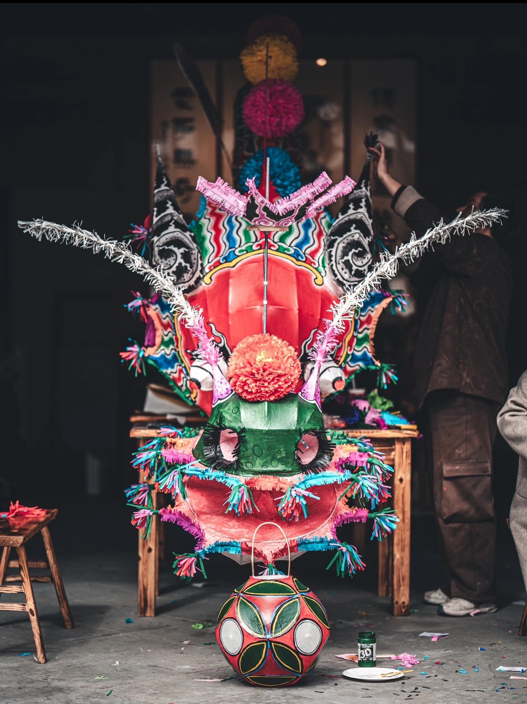
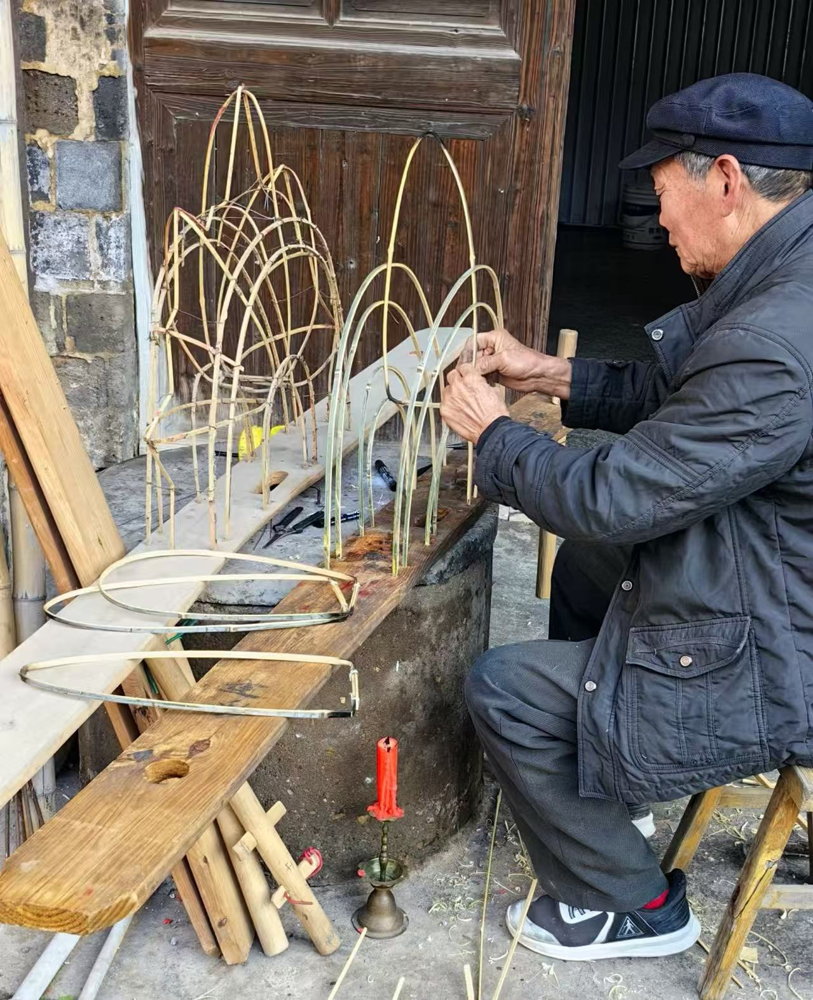
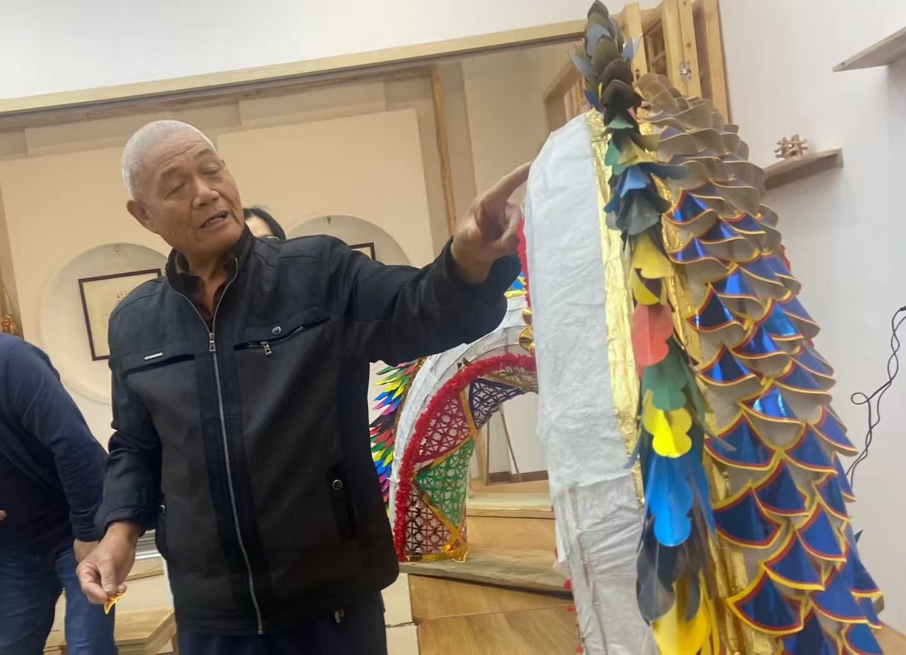

浦江板凳龙

浦江板凳龙俗称 “长灯”，是浙江省金华市浦江县独有的民俗舞龙，也是国家级非物质文化遗产，更作为 “春节” 的重要组成部分入选了联合国人类非物质文化遗产代表作名录。整条龙由龙头、龙身（子灯）、龙尾三部分组成，龙身由几十节、几百节甚至上千节板凳串联而成，可无限延长，气势磅礴，有 “地上星河” 的美誉。根据龙头造型可分为仰天龙、俯地龙、大虾龙等类别，凳板上的灯彩也有方灯、酒坛灯、人物灯等 11 种不同样式，每一条板凳龙都独一无二。
制作工艺
浦江板凳龙是一座移动的民间艺术馆，集多种传统技艺于一体：
骨架扎制：以韧性竹篾为骨，制作龙的框架，传统工艺每侧竹篾多达 4 根，现代改良后更稳固，可支撑起庞大的灯体。
糊裱彩绘：灯体表面以皮纸或纱布糊裱，绘制龙鳞、花鸟、人物、亭台楼阁等吉祥图案，也融合剪纸、刻花、雕塑等工艺，寓意人丁兴旺、国泰民安。
组装串联：将灯体固定在 2 米长的木板凳上，内置灯火，再用木棒将板凳依次连接，可根据参与人数拼接成数百米的长龙。
阵式编排：舞龙时还有麦饼团、剪刀箍、甩尾巴等十几种阵式，动作变化多端，刚柔并济。


龙纹历史渊源
浦江板凳龙的传承脉络清晰，跨越千年：
孕育期（唐代）：自唐代起，“龙腾灯舞闹元宵” 就成为浦江民间习俗，浦江县志中已有相关记载。
成熟期（宋元）：宋代时，板凳龙已在民间广泛流行，形制与舞龙阵式基本成型。
鼎盛期（明清）：明清时期，浦江板凳龙发展至鼎盛，各村都有自己的龙灯队伍，元宵迎灯成为当地最重要的民俗活动。
传承期（近现代）：2006 年入选第一批国家级非物质文化遗产名录；2024 年，作为 “春节” 组成部分入选联合国人类非遗，多次登上北京、鸟巢等舞台，成为中国民俗文化的名片。
文化传承
浦江板凳龙早已超越了 “舞龙” 本身，成为浦江人文化认同与精神的载体：
精神象征：龙是中华民族的图腾，板凳龙舞龙活动寄托了百姓对风调雨顺、国泰民安的祈愿，也象征着团结协作、奋发向上的精神。
社区纽带：制作与迎灯需要全村男女老少共同参与，每一节板凳都代表一户人家，串联起宗族与邻里的情感，是维系乡情的重要载体。
活态传承：如今，浦江板凳龙仍在每年春节、元宵期间展演，不仅保留传统工艺，还融入现代设计，走进校园、社区，让千年民俗在新时代焕发新生。